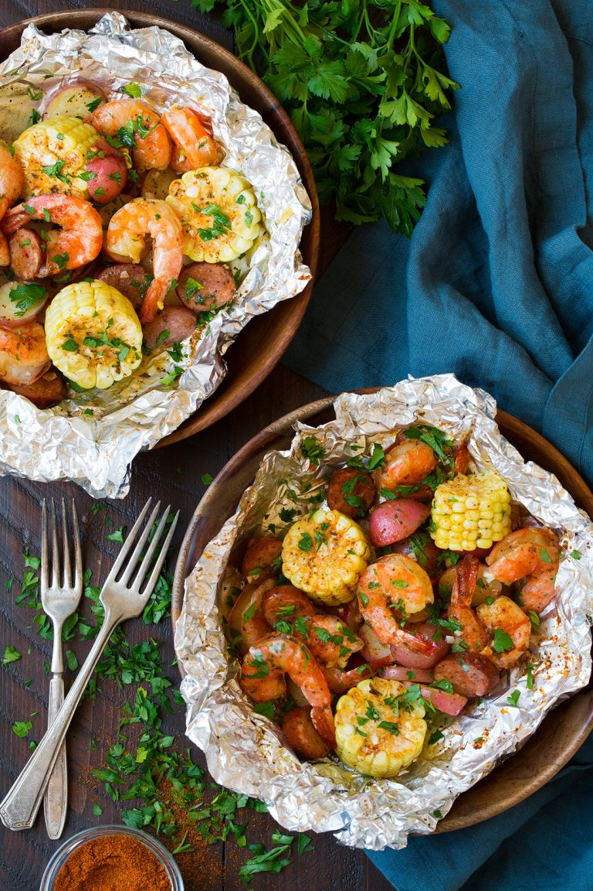

Shrimp Boil on the Grill
Make-ahead foil packets with shrimp, sausage, corn, and potatoes make for a fast and fun seafood boil
Ingredients
- heavy duty aluminum foil
- 1 ½ pounds large shrimp, peeled and deveined
- 1 pound baby potatoes, halved
- 1 (12 ounce) package andouille sausage, sliced
- 2 ears corn, cut crosswise into 4 pieces
- 2 tablespoons olive oil, divided
- 1 ½ tablespoons butter, cut into 4 pats, or to taste
- 4 teaspoons seafood seasoning (such as Old Bay®)
- 4 teaspoons minced fresh garlic
- kosher salt and ground black pepper to taste
- 1 lemon, cut into wedges
- 2 tablespoons chopped parsley leaves
Steps
- Cut four 12-inch sheets of aluminum foil. Mix shrimp, potatoes, sausage, and corn together. Add an equal portion to the center of each sheet of foil.
- Fold up the sides of the foil packets. Add 1/2 tablespoon olive oil, 1 pat of butter, 1 teaspoon seafood seasoning, 1 teaspoon garlic, salt, and pepper to each packet. Squeeze 1 lemon wedge into each and leave it in the packet. Toss mixture gently to combine. Fold foil over to seal packet fully.
- Preheat an outdoor grill for high heat and lightly oil the grate. Grill packets until shrimp is opaque and vegetables are tender, about 15 minutes. Garnish with parsley.